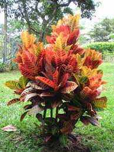

Info Tanaman Banyumanik

Puring
Kingdom: Plantae
Divisi: Tracheophyta
Class: Magnoliopsida
Ordo: Malpighiales
Famili: Euphorbiaceae
Genus: Codiaeum
Spesies: Codiaeum variegatum
🌱 Budidaya
- Lingkungan: Cocok di dataran rendah–menengah, sinar matahari terang atau teduh sebagian, tanah gembur dan kaya bahan organik.
- Penanaman: Bisa ditanam di pot atau langsung di tanah, dengan media tanam campuran tanah, kompos, dan pasir.
- Perawatan: Siram 1–2 kali sehari, pangkas daun atau cabang tua, bersihkan daun dari debu agar tetap segar.
💡 Fun Fact
"Daun dengan Warna Pelangi" — Warna daunnya bisa campuran kuning, merah, ungu, jingga, dan hijau – seperti lukisan hidup yang alami!
🍃 Manfaat
- Tanaman hias ideal untuk dekorasi ruangan.
- Menyerap polusi udara dan memberi keteduhan.
- Digunakan dalam ritual adat karena simbol keseimbangan dan ketenangan.